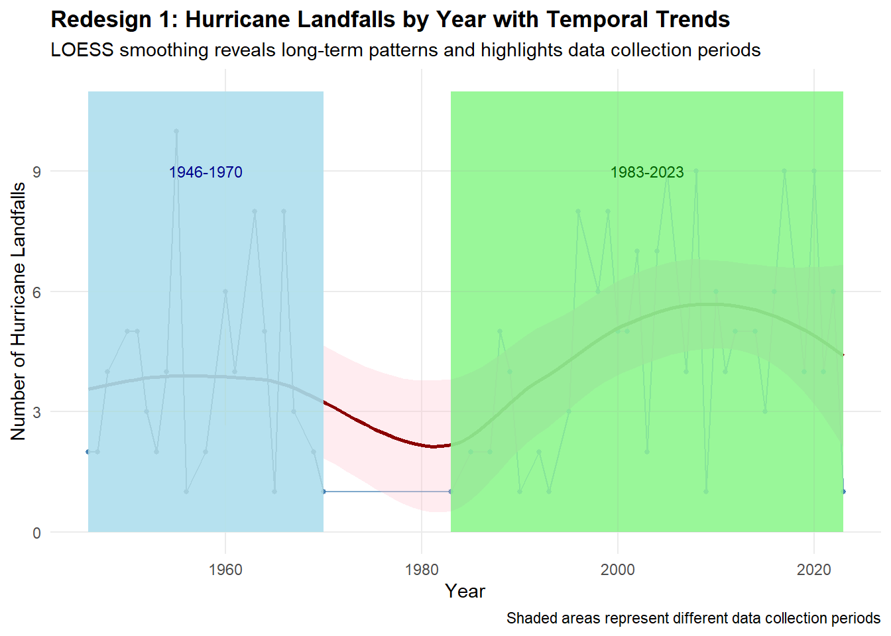
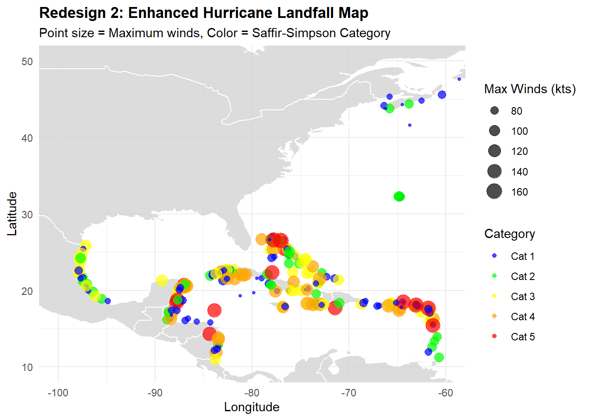
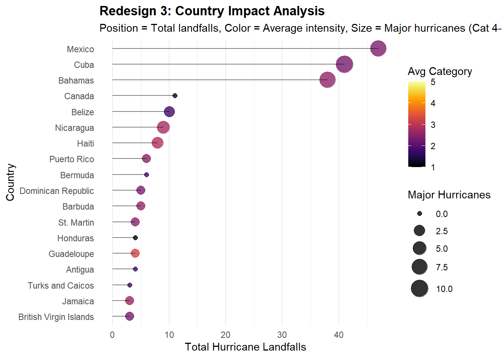

# Prepare annual trends dataannual_trends <- df_clean %>%group_by(Year) %>%summarise(hurricane_count =n(),major_hurricanes =sum(SSHWS >=4, na.rm =TRUE),avg_pressure =mean(CentralPressure, na.rm =TRUE),.groups ='drop' )# Create temporal trends visualizationp_redesign1 <-ggplot(annual_trends, aes(x = Year, y = hurricane_count)) +geom_line(color ="steelblue", alpha =0.7) +geom_point(color ="steelblue", size =1) +geom_smooth(method ="loess", se =TRUE, color ="darkred", fill ="pink", alpha =0.3) +geom_rect(aes(xmin =1946, xmax =1970, ymin =0, ymax =max(hurricane_count)*1.1), fill ="lightblue", alpha =0.05) +geom_rect(aes(xmin =1983, xmax =2023, ymin =0, ymax =max(hurricane_count)*1.1), fill ="lightgreen", alpha =0.05) +annotate("text", x =1958, y =max(annual_trends$hurricane_count)*0.9, label ="1946-1970", size =3, color ="darkblue") +annotate("text", x =2003, y =max(annual_trends$hurricane_count)*0.9, label ="1983-2023", size =3, color ="darkgreen") +labs(title ="Redesign 1: Hurricane Landfalls by Year with Temporal Trends",subtitle ="LOESS smoothing reveals long-term patterns and highlights data collection periods",x ="Year", y ="Number of Hurricane Landfalls",caption ="Shaded areas represent different data collection periods") +theme_minimal() +theme(plot.title =element_text(face ="bold"),panel.grid.minor =element_blank())print(p_redesign1)

# Save the visualizationggsave("redesign1_temporal.png", p_redesign1, width =12, height =8, dpi =300)
Redesign 2: Spatial Distribution Map
# Prepare world map dataworld_map <-map_data("world")# Prepare spatial dataspatial_data <- df_clean %>%filter(!is.na(Latitude_num) &!is.na(Longitude_num)) %>%mutate(intensity_group =cut(SSHWS, breaks =c(0, 1, 2, 3, 4, 5),labels =c("Cat 1", "Cat 2", "Cat 3", "Cat 4", "Cat 5"),include.lowest =TRUE) )# Create enhanced spatial mapp_redesign2 <-ggplot() +geom_polygon(data = world_map, aes(x = long, y = lat, group = group), fill ="lightgray", color ="white", alpha =0.8) +geom_point(data = spatial_data, aes(x = Longitude_num, y = Latitude_num, size = MaxWinds, color = intensity_group),alpha =0.7) +scale_color_manual(values =c("Cat 1"="blue", "Cat 2"="green", "Cat 3"="yellow", "Cat 4"="orange", "Cat 5"="red")) +scale_size_continuous(range =c(1, 6), name ="Max Winds (kts)") +coord_cartesian(xlim =c(-100, -60), ylim =c(10, 50)) +labs(title ="Redesign 2: Enhanced Hurricane Landfall Map",subtitle ="Point size = Maximum winds, Color = Saffir-Simpson Category",x ="Longitude", y ="Latitude", color ="Category") +theme_minimal() +theme(plot.title =element_text(face ="bold"))print(p_redesign2)

# Save the visualizationggsave("redesign2_spatial.png", p_redesign2, width =12, height =8, dpi =300)
Redesign 3: Country Impact Assessment
# Prepare country impact datacountry_impact <- df_clean %>%filter(!is.na(LandfallCountry)) %>%group_by(LandfallCountry) %>%summarise(total_landfalls =n(),avg_intensity =mean(SSHWS, na.rm =TRUE),max_intensity =max(SSHWS, na.rm =TRUE),major_hurricanes =sum(SSHWS >=4, na.rm =TRUE),.groups ='drop' ) %>%filter(total_landfalls >=3) %>%# Only countries with multiple landfallsarrange(desc(total_landfalls))# Create country impact visualizationp_redesign3 <-ggplot(country_impact, aes(x = total_landfalls, y =fct_reorder(LandfallCountry, total_landfalls))) +geom_point(aes(size = major_hurricanes, color = avg_intensity), alpha =0.8) +geom_segment(aes(xend =0, yend = LandfallCountry), alpha =0.5) +scale_color_viridis(name ="Avg Category", option ="inferno", limits =c(1, 5), breaks =1:5) +scale_size_continuous(name ="Major Hurricanes", range =c(2, 8)) +labs(title ="Redesign 3: Country Impact Analysis",subtitle ="Position = Total landfalls, Color = Average intensity, Size = Major hurricanes (Cat 4-5)",x ="Total Hurricane Landfalls", y ="Country") +theme_minimal() +theme(plot.title =element_text(face ="bold"),panel.grid.major.y =element_blank())print(p_redesign3)

# Save the visualizationggsave("redesign3_country.png", p_redesign3, width =12, height =8, dpi =300)# Display top affected countriescat("Top 5 Most Affected Countries:\n")